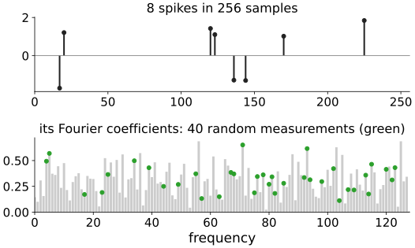
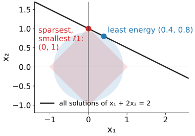
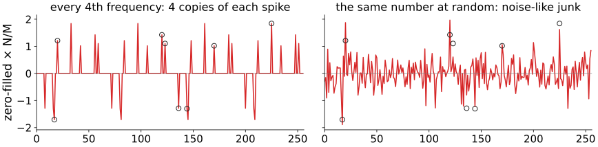
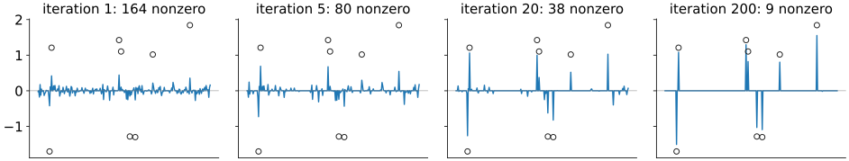
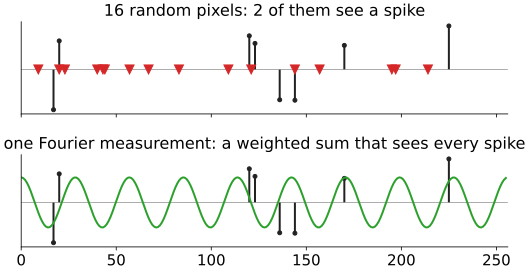
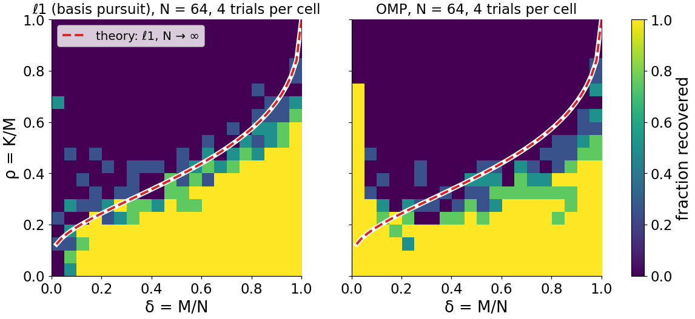
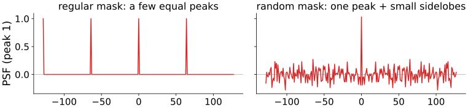
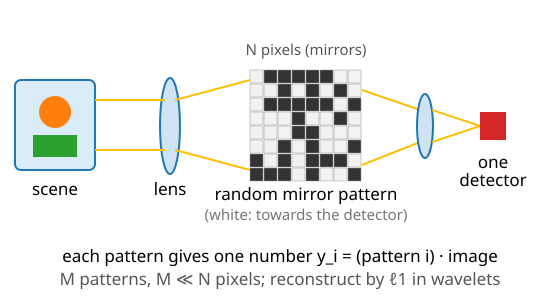

Compressed sensing: fewer measurements than unknowns
About this lecture
The last unit used a sparsity prior to fill in missing data. Today we leave data out on purpose: if the signal is sparse, how few measurements are enough, and which ones?
- The surprise: a signal with K nonzeros out of N can be recovered from about K\log(N/K) measurements, far fewer than N.
- The measurements must be incoherent with the sparsity basis: random undersampling gives noise-like artefacts that thresholding removes; regular undersampling gives copies that it cannot.
- Recovery by ℓ1 (ISTA from the last unit) or OMP.
- The phase transition: recovery switches from almost always to almost never.
- What compressed sensing does not do.
Slides titled The math give the formulas and proofs; the ideas are complete without them.
The surprise
Recall sampling: to capture a signal with frequencies up to f, sample at more than 2f. A signal of N samples with all frequencies needs all N numbers.
But this signal has only 8 nonzero samples out of 256. Its information: 8 values plus where they are, \log_2\binom{256}{8} = 48.5 bits for the positions.
Can we measure a few dozen numbers instead of 256, without knowing where the spikes are? For example 40 random Fourier coefficients (green)?

Underdetermined, so add a prior
M < N measurements: A\mathbf x = \mathbf y with fewer equations than unknowns. Infinitely many solutions: any vector of the null space can be added (recall ill-posed problems, iterative reconstruction).
Which one to pick?
- Least energy (smallest ℓ2): spreads the weight over all unknowns.
- Smallest ℓ1: the line of solutions touches the diamond at a vertex, a sparse solution.
On the right: one equation, two unknowns. Least energy (0.4, 0.8); smallest ℓ1 (0, 1).

By hand: 4 unknowns, 2 measurements
A = \begin{pmatrix}1 & 1 & 1 & 1\\ 1 & -1 & 2 & 0\end{pmatrix},\quad \mathbf y = (3,\ 6).
| solution | \mathbf x | ℓ1 | ℓ2 |
|---|---|---|---|
| least energy A^\top(AA^\top)^{-1}\mathbf y | (1.2, −0.6, 2.1, 0.3) | 4.2 | 2.51 |
| sparsest | (0, 0, 3, 0) | 3 | 3 |
- Both reproduce \mathbf y exactly.
- Only column 3, (1, 2), is proportional to \mathbf y, so (0, 0, 3, 0) is the only solution with one nonzero.
- ℓ2 prefers the spread-out answer (2.51 < 3); ℓ1 prefers the sparse one (3 < 4.2). If the truth was sparse, ℓ1 finds it.
Coherent and incoherent aliasing

Set the unmeasured coefficients to 0 and transform back (zero filling), with the same 64 of 256 rows:
- regular (every 4th frequency): each spike appears 4 times, a quarter of the length apart (recall aliasing). The copies are as tall as the original: nothing can tell them apart.
- random: the spikes stand out above noise-like junk spread everywhere. Junk can be thresholded away.
Recovery by iterative thresholding

ISTA from the last unit: threshold away the junk below the strong spikes; re-predict the data; the junk they caused disappears from the residual, and weaker spikes emerge. 164 → 80 → 38 → 9 nonzeros. With regular sampling this cannot work: a copy is not junk.
Try it: recovering a sparse signal
Incoherence: every measurement must see every atom
- Random pixels of a spike signal: most samples land between the spikes and see nothing (2 of 16 hit a spike here). Spikes that are not sampled are lost forever.
- Fourier coefficients of a spike signal: each one is a weighted sum over all samples, so each sees every spike a little.
Rule: the sensing basis must be spread out in the basis where the signal is sparse. Pixels and Fourier are maximally spread out with respect to each other (incoherent). A random (Gaussian) matrix is incoherent with every fixed basis.
For an image that is sparse in wavelets, random pixels are bad again only for the finest wavelets; Fourier is bad for the coarsest (next unit).

How many measurements?
- Of the order of K\log(N/K), a few times K in practice: for 8 spikes in 256 samples K\ln(N/K) \approx 28; we used 40–64. For K = 1000 nonzeros in a million unknowns: about 7000 against 10^6.
- The measurements need not be “clever”: random ones work, and the decoder (ℓ1) does not need to know in advance where the nonzeros are.
- Stable: with noise, the error of the ℓ1 solution (with a data term, as in the last unit) is proportional to the noise, not amplified.
- Compressible signals (not exactly sparse) are recovered about as well as their best K-term approximation allows (recall “keep the K largest” in dwt2d).
The math: the null space property
ℓ1 recovers every K-sparse \mathbf x from A\mathbf x if and only if, for every nonzero \mathbf h in the null space of A and every set S of K indices, \|\mathbf h_S\|_1 < \|\mathbf h_{S^c}\|_1 (no null-space vector is concentrated on a few entries).
Proof of “if”: let \mathbf x be supported on S and \mathbf x + \mathbf h another solution (A\mathbf h = 0, \mathbf h \ne 0). Then \|\mathbf x + \mathbf h\|_1 = \|\mathbf x_S + \mathbf h_S\|_1 + \|\mathbf h_{S^c}\|_1 \ge \|\mathbf x_S\|_1 - \|\mathbf h_S\|_1 + \|\mathbf h_{S^c}\|_1 > \|\mathbf x\|_1. So \mathbf x is the unique ℓ1 minimiser. The 2 × 4 example: the null space is spanned by (−0.747, 0.347, 0.547, −0.147) and (−0.376, −0.424, −0.024, 0.824).
The math: coherence and RIP
- Mutual coherence (unit columns): μ(A) = \max_{i \ne j}|\mathbf a_i^\top\mathbf a_j|. If K < \tfrac12(1 + 1/μ), both ℓ1 and OMP recover every K-sparse signal (Donoho & Elad 2003, Tropp 2004). The 2 × 4 example: μ = 3/√10 = 0.949 (columns 1 and 3), so the guarantee covers only K = 1.
- Coherence is pessimistic (μ ≥ about 1/\sqrt M for N \gg M, so it guarantees only K \lesssim \sqrt M). The restricted isometry property (RIP) of order 2K, (1 - δ)\|\mathbf x\|^2 \le \|A\mathbf x\|^2 \le (1 + δ)\|\mathbf x\|^2 \quad\text{for all } 2K\text{-sparse }\mathbf x, with δ small enough (\sqrt2 - 1, Candès 2008) also guarantees recovery. Gaussian M \times N matrices satisfy it with high probability when M \ge C\,K\log(N/K) (Candès & Tao 2006; Donoho 2006). Random rows of the Fourier matrix need a few extra log factors.
The phase transition

Donoho–Tanner diagram: δ = M/N (how undersampled) against ρ = K/M (nonzeros per measurement). Each cell: the fraction of random trials recovered.
- A sharp boundary: below it almost always success, above almost always failure. The transition region narrows as N grows; the dashed curve is the limit for large N (ρ ≈ 0.39 at δ = 0.5).
- OMP’s boundary lies below ℓ1’s: here at δ ≈ 0.5, ℓ1 succeeds up to ρ ≈ 0.35, OMP up to ≈ 0.25.
- Practical reading: for a given K, measure enough that you are safely below the curve.
Try it: the phase transition
The math: zero filling is A^\top\mathbf y
Partial Fourier sampling: A = PF with F the orthonormal DFT and P the rows kept. Zero filling is F^{-1}P^\top\mathbf y = F^{-1}P^\top PF\mathbf x = \mathbf x * \mathrm{psf}_P, a circular convolution with the point spread function of the mask, the inverse DFT of the mask (multiplication in frequency = convolution in space).
- Regular mask, every r-th frequency: the PSF is r equal peaks, N/r apart: r copies.
- Random mask: one peak plus many small, irregular sidelobes (here at most 0.28 of the peak): noise-like.
- The sidelobe level measures incoherence.

You have seen it already

Few-view CT with a TV prior (iterative reconstruction): 30 views, RMSE 0.081 with filtered back-projection against 0.020 with TV.
That was compressed sensing:
- the image is sparse in differences (a piecewise-constant phantom);
- 30 projections are far fewer than the unknowns;
- the projections (lines through the whole image) are spread out with respect to sharp edges: incoherent enough;
- the reconstruction minimises misfit + TV.
The single-pixel camera

One detector, many random patterns (Duarte et al. 2008):
- An array of tiny mirrors shows a random pattern; the detector measures the total light of the pattern: one random weighted sum of all pixels.
- Repeat with M \ll N patterns; reconstruct by ℓ1 in a wavelet basis.
- Worth it only where a pixel array is expensive or impossible: infrared, terahertz, some fluorescence lifetime setups. For visible light a camera chip is cheap and faster.
What compressed sensing does not do
- It does not beat sampling theory for signals that are not sparse: a texture with no structure still needs all its samples.
- The sparsifying basis must be right: if the image is not sparse in it, recovery fails.
- With too few measurements it fails abruptly (phase transition), and the failure can look plausible: a sparse, clean, wrong image.
- It trades measurement time for computation and for assumptions; the assumption is part of the result.
- It does not create detail: what ℓ1 shrinks away (small, low-contrast features) is gone (next unit).
The math: the noisy problem
With noise, \mathbf y = A\mathbf x + \mathbf n, \|\mathbf n\|_2 \le ε. Solve \min_{\mathbf x}\|\mathbf x\|_1 \quad\text{subject to}\quad \|A\mathbf x - \mathbf y\|_2 \le ε, which is the lasso \tfrac12\|A\mathbf x - \mathbf y\|^2 + λ\|\mathbf x\|_1 for a suitable λ (Lagrange multiplier). If A has the RIP of order 2K with small enough constant, the solution \mathbf x^\star obeys (Candès 2008) \|\mathbf x^\star - \mathbf x\|_2 \le C_0\,\frac{\|\mathbf x - \mathbf x_K\|_1}{\sqrt K} + C_1\,ε, with \mathbf x_K the best K-term approximation. First term: compressibility (0 for exactly sparse signals); second: noise, not amplified beyond a constant.
Summary
- A K-sparse signal of length N can be recovered from about K\log(N/K) measurements by ℓ1 (or OMP), without knowing where the nonzeros are.
- Underdetermined systems have many solutions; least energy spreads them, ℓ1 picks the sparse one.
- Measurements must be incoherent with the sparsity basis: random Fourier coefficients for spikes, Gaussian matrices for any basis. Random pixels of a spike signal see nothing.
- Regular undersampling: copies (coherent aliasing). Random: noise-like junk that thresholding (ISTA) removes.
- A sharp phase transition separates success from failure; OMP’s lies below ℓ1’s.
- Stable with noise, near-optimal for compressible signals; fails abruptly and plausibly with too few measurements.
- Next: the flagship application, fast MRI.